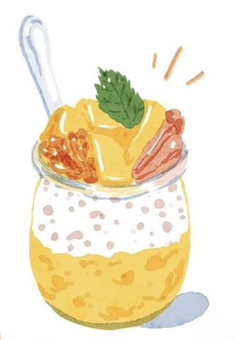
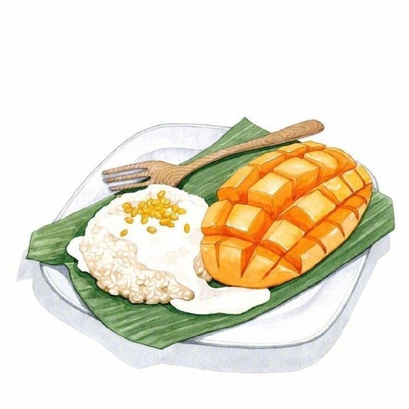
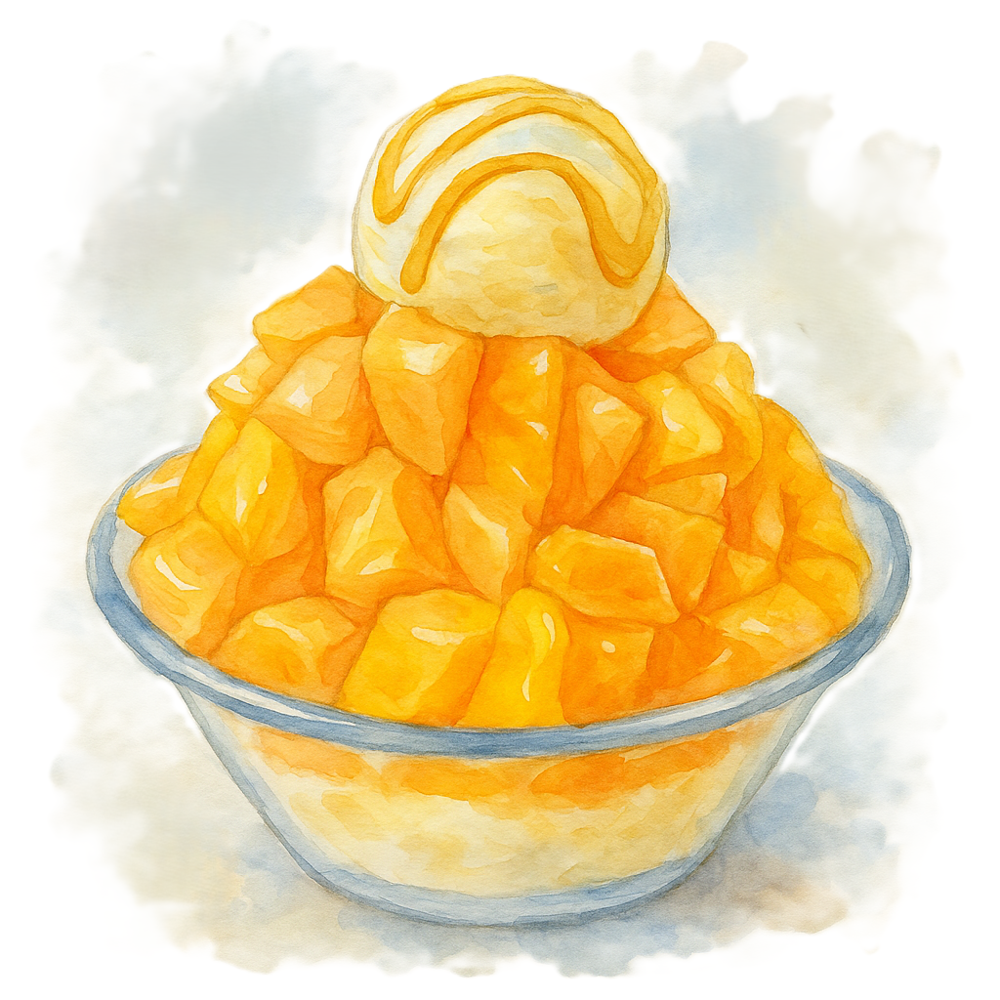

芒果小廚房🍴
楊枝甘露
材料：
- 愛文芒果3-4顆、葡萄柚1顆、西米露、椰漿
作法：
- 水煮沸後倒入西米露煮10分鐘，熄火後悶2分鐘，取出冰鎮瀝乾
- 一半芒果切丁，另一半打成泥和椰漿混合
- 將西米露倒入芒果椰漿內，放上芒果丁與葡萄柚
- 放入冰箱冷藏即完成
泰式椰汁芒果糯米飯
材料：
- 長糯米、愛文芒果、椰漿、糖、鹽
作法：
- 將糯米蒸熟
- 椰漿加糖與鹽加熱後關火
- 將一半椰漿拌入糯米，靜置吸收
- 糯米飯裝盤後淋上剩餘椰漿，芒果切花擺盤
芒果奶酪

材料：
- 鮮奶、砂糖、吉利丁粉、愛文芒果2顆
作法：
- 將吉利丁與水混合放置，融化後與加熱鮮奶及糖混合
- 過篩後倒入容器冷藏
- 吃前鋪上芒果丁
芒果冰沙
材料：
- 愛文芒果、冰塊
作法：
- 芒果與冰塊放入果汁機打成冰沙即可
芒果乳酪慕斯蛋糕

材料：
- 無鹽奶油、奶油乳酪、鮮奶油、鮮奶、愛文芒果、糖、吉利丁粉、消化餅乾
作法：
- 餅乾壓碎與奶油混合做底層，壓入模具
- 牛奶加糖加熱後加入融化吉利丁
- 混入打發鮮奶油與奶油乳酪
- 芒果打泥加入慕斯內並倒入模具
- 再做一層芒果果泥作表面，冷藏至凝固